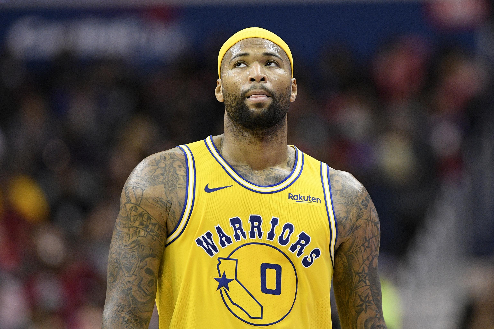

Predicciones para la agencia libre de la NBA en 2019
A las 19:00 horas, en el huso horario de la Ciudad Autónoma de Buenos
Aires, se dará comienzo al periodo de fichajes en la agencia libre de
la NBA, lo que quiere decir que todos los jugadores que terminaron o
salieron de sus contratos son libres de escoger cual será el próximo
equipo donde disputen sus partidos la siguiente temporada.
Este quizá sea el grupo de agentes libres más importante de los
últimos años, con tantas posibilidades de que el futuro de la liga
cambie con tan solo la firma de un contrato. Los principales nombres
como Kawhi Leonard, Kevin Durant, Kyrie Irving y Jimmy Butler son solo
el comienzo, ya que se encuentran de todo tipo de jugadores para
añadir a la fuerza de un equipo o simplemente arruinar su presupuesto
salarial los próximos años.
En esta pequeña nota con al que prácticamente estoy dando inicio al
pequeño proyecto que tengo en mente desde el año pasado, voy a dar mis
predicciones de donde terminarán los 10 mejores jugadores disponibles
y el por qué de mi razón. Intentaré hacer esto lo más corto y directo
posible, pero a veces no siempre me sale de la mejor forma.
Kawhi Leonard
Mi predicción: Los Angeles Clippers
Luego de ganar un campeonato con los Raptors, Leonard tiene demasiadas
posibilidades lo que hacen predecir su decisión bastante difícil. Puede
volver por un par de años a Toronto, para maximizar sus ganancias y
quizá competir por otro anillo. Puede irse a Los Angeles a formar su
propio equipo con los Clippers y vivir feliz, sin los medios de
comunicación encima de él. Puede volverse el nuevo villano de la NBA y
unirse a LeBron James y Anthony Davis en los Lakers.
En fin, son demasiadas cosas por calcular, y Kawhi es un tipo muy
extraño, seguramente solo va a los Clippers porque tienen un uniforme
bonito o algo así. Sólo el mismo entiendo lo que pasa por su mente y
hasta que no anuncie cual será su destino, es un tiro al piso.
Kevin Durant
Mi predicción: Brooklyn Nets
Otro futuro difícil de predecir, Durant probablemente no juegue la
siguiente temporada gracias a la reconstrucción de su tendón de Aquiles,
y hasta ahora no hay ningún indicio que nos de una pista de cual será su
próximo equipo.
Sabemos que el interés de volver a los Warriors para Durant es
simplemente el dinero que la franquicia le puede ofrecer, pues las
preferencias del jugador son otras: la ciudad de Nueva York tiene mucha
influencia, y la habilidad de poder intervenir en las decisiones de la
franquicia al ser la pieza principal del equipo.
Por esta razón, los Nets para mi son los favoritos para quedarse con KD;
una plantilla competitiva y joven, ubicados donde él desea, además de
tener la oportunidad de ser la cara histórica de la organización además
de quién dicte las decisiones de la misma. El siguiente jugador en la
lista también tiene mucho que ver en su posible decisión.
Kyrie Irving
Mi predicción: Brooklyn Nets
Hace semanas que conocíamos la junta entre los Nets y Kyrie se haría
oficial en cualquier momento, y las cosas no han cambiado hasta ahora.
Irving siempre quiso ir a la ciudad de Nueva York desde sus días en los
Cleveland Cavaliers, y con una plantilla tan competitiva como la de los
Nets, fue amor a primera oferta.
Además, también sabemos que él y Kevin Durant son amigos cercanos, y los
Nets no estaban convencidos de firmar a Kyrie por sí solo, y no sólo
eso, lo que a mis ojos lo veo como una sola conclusión: KD probablemente
sea parte del plantel de Brooklyn también.
Jimmy Butler
Mi predicción: Los Angeles Lakers
Creo que Jimmy Butler está buscando no tener que jugar con la menor
cantidad de jugadores jóvenes posibles, y para conseguir un anillo y un
roster en donde pueda codearse de jugadores más maduros o con un poco
más de capacidad de aguantar su habladera de paja, no hay mejor destino
que los Lakers ahora mismo.
Aunque no sea la misma cantidad de plata que le puede ofrecer
Philadelphia, seguramente es más que suficiente para hacerlo
comprometerse por un par de campañas.
Klay Thompson
Mi predicción: Golden State Warriors
Esta predicción no es tan complicada, todos sabemos que Golden State
hará lo necesario para quedarse con los servicios de Klay así se pierda
casi toda la temporada próxima con su lesión en la rodilla. La única
forma de que Thompson no regresa a los Warriors es que simplemente no le
ofrezcan la extensión de contrato máximo que espera, o que quiera vivir
en Los Angeles permanentemente.
Tobias Harris
Mi predicción: Philadelphia 76ers
Los Sixers no pueden perder a dos de sus estrellas, por lo que sí Jimmy
Butler va a los Lakers, lo más probable es que Harris se queden con
Philadelphia en un contrato máximo, y siga siendo una pieza importante
en la búsqueda por dominar la conferencia Este junto a Ben Simmons y
Joel Embiid.
Khris Middleton
Mi predicción: Milwaukee Bucks
Otra selección sencilla, los Bucks no pueden dejar ir a la segunda pieza
más importante de todo su equipo o posiblemente perderán sus
posibilidades de contender al título y muy probablemente, la presencia
de Giannis Antetokounmpo en la agencia libre de 2020. Para un equipo que
genera tan poca atracción al estar ubicado en una ciudad pequeña y
limitada.
DeMarcus Cousins
Mi predicción: Golden State Warriors
La mejor decisión que puede tomar DeMarcus en su carrera ahora mismo es
volver con Golden State, para intentar ser protagonista del equipo quién
no contará con Klay Thompson por lesión y perderá a Kevin Durant en la
agencia libre. Es el mejor ambiente para que Cousins logre:
1) Obtener un título 2) Tener un salario decente 3) Revivir su perfil
como superestrella de la NBA.

D'Angelo Russell
Mi predicción: Minnesota Timberwolves
El mejor amigo de Russell es Karl-Anthony Towns, y Minnesota necesita sí
o sí un nuevo base titular; con Brooklyn eligiendo a Kyrie Irving, no
hay razón para que Russell pierda dinero y vaya a ser opacado por LeBron
James y Anthony Davis en los Lakers. Los Wolves deberán cambiar a Andrew
Wiggins para hacer posible este movimiento, lo cual es una razón más
para que su motivación por adquirir a D'Angelo crezca.